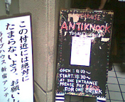
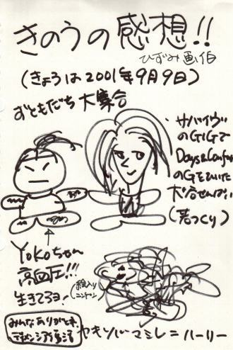

2001.09.08 新宿アンティノック
SURVIVE REALIZEレコ発
出演：BASSIUM・GERONIMO・JURASSIC JADE・大砲・SUNS OWL・SURVIVE
●ＪＵＲＡＳＳＩＣ ＪＡＤＥ’Ｓ setlists
ドク・ユメ・スペルマ
Ｐｌａｓｔｉｃ Ｗａｔｅｒ Ｍｏｔｈｅｒ
香港庭園
Ｇ．Ｄ．Ｇ
Ｃａｎ Ｙｏｕｒ Ｂｉｒｄ Ｓｉｎｇ？
Ｔｈｉｓ Ｉｓ Ｍａ Ｓｏｎｇ
ＨＹＰＥＲＴＯＮＩＣ ＷＯＮＤＥＲＦＵＬ ＭＯＮＵＭＥＮＴ
Ｗｈｏ Ｓａｗ Ｈｉｍ Ｄｉｅ？
血がでるまで
Ａｆｔｅｒ Ｋｉｌｌｉｎｇ Ｍａｍ
●ＭＥＭＢＥＲ’Ｓ comment
ＨＩＺＵＭＩ
(下のイラスト御覧下さい。)
ＮＯＢ
蒸し暑さをますます蒸し暑くするライブでした。
HIZUMIのMC「男も女もジャンルも関係ねえ!!」は最高でした。
HIZUMIはメイクも衣装もつけてますが、最も「裸」だったんじゃないでしょうか？
ＹＡＳＵＮＯＲＩ
残り少ないライブをアンチで演れたのはとても嬉しかった。とても好きなハウスの一つだから。メンツも良くあまり他を観る事はないが、今回はじっくり楽しんで観てしまった。音楽はいいなと再確認した。自分としては魂入った一音一音を出す事に集中しそれが出来た。JJ入って初ライブが目黒で終わりもここなのは締めくくりとしてはいいかなと思う。最期もいいライブにしたい。
ＨＡＹＡ
ライブは思いのほかスッキリした音でやれて、やりやすかったっす。はい。
やはり必要なんでしょうか？たぶん・・・。
またまた、たのしいライブでうれしかったっす。
あと一回、魂入った一音一音、頑張りましょう、大森さん。
私も頑張ります、魂入れて。
パズさん、ごちそう様でした。ラーメン美味しゅうございました。次は五反田ファイトクラブで・・・。
 |
新宿アンテイノック入り口の看板です。 「この付近に」の看板はいたるところにあります。 Dr.HAYAが発見した注意書きには「この付近で立ち小便をしないで下さい。アンティノックの存続にも影響します。」というようなことが書いてあったそうです。バンドマンやお客さんは犬扱いですなァ。 |

copyright(C)HIZUMI
BACK TO